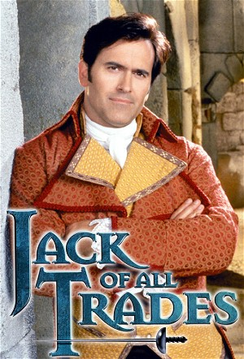

Jack of All Trades (2000)
| Year | 2000 |
|---|---|
| Status | Completed |
| Seasons | 2 |
| Episodes | 22 |
| Genre | Action, Adventure, Comedy, Fantasy |
American spy Jack Stiles is sent by Thomas Jefferson to the tiny East Indies island of Palau-Palau where he teams up with British agent and inventor Emilia Rothschild to thwart the efforts of Napoleon and France in that region of the world. While acting as Emilia's man-servant, Jack dons the masked garb of the legendary Daring Dragoon and fights the local French Governor as well as thwarting various other schemes against America. This series starring cult-favorite Bruce Campbell and produced by Sam Raimi combined various factors from both of their series: the use of a historical setting (sorta) and quirky humor that Raimi had made famous with Hercules and Xena, a mix of The Wild Wild West Jules Verne-style tech that was used in Campbell's The Adventures of Brisco County Jr., and the wild stunts that were seen in all of these shows. Airing back to back in syndication with another Raimi production, Cleopatra 2525, Jack... lasted two years.
Episodes
| # | Title | Air Date | Synopsis |
|---|---|---|---|
| 1 | Return of the Dragoon | 2000-01-22 | Daring American spy Jack Stiles is sent to the East Indies where he teams up with beautiful British secret agent Emilia Rothschild to thwart Napoleon's advances in the region. |
| 2 | Sex and the Single Spy | 2000-01-29 | After receiving a lesson in the fine art of seduction from Jack, Emilia sets out to retrieve a secret code from the famous French spy, Monsieur Martin. |
| 3 | The Floundering Father | 2000-02-05 | Jack and Emilia must rescue the kidnapped Benjamin Franklin, who is en route to France to build a weapon of mass destruction for Napoleon. |
| 4 | Once You Go Jack... | 2000-02-12 | Kentucky Sue, Jack's former gun-slinging partner and love interest, tracks him down to propose marriage. |
| 5 | The People's Dragoon | 2000-02-19 | Jack dons the disguise of the Dragoon as he and Emilia retrieve an American gold shipment intercepted by Croque. |
| 6 | Raging Bully | 2000-02-26 | Jack must beat a very, very tiny Napoleon at poker to save his life and win Louisiana back from the French. |
| 7 | Daddy Dearest | 2000-03-04 | Emilia's daddy comes to Palau-Palau for a visit, but this is no ordinary family reunion. Will the veteran spy help or hinder Emilia and Jack's plan to defeat Croque's army of 5,000 soldiers? |
| 8 | One Wedding and an Execution | 2000-03-11 | Napoleon tells Emilia he'll refrain from attacking England if she'll wed him. Will Emilia's conviction that she can change the little man's evil ways, actually send her down the aisle? |
| 9 | Croque for a Day | 2000-04-15 | Napoleon sends an inspector to the island to evaluate his brother. Can Jack and Emilia prevent him from exposing Croque's inadequacies and replacing him with someone who could do some real harm? |
| 10 | Dead Woman Walking | 2000-04-22 | Graves are being desecrated and the Daring Dragoon is being blamed. Can Emilia play dead long enough to clear his name? |
| 11 | Love Potion #10 | 2000-04-29 | His brother's vertically challenged, and so is Croque, in a way. Can Emilia and Jack keep Pulau Pulau peaceful, by getting the Croque to "satisfy" his lusty wife between the sheets? |
| 12 | Up the Creek | 2000-05-06 | The explorers Lewis and Clark land on Pulau Pulau. But can Emilia and Jack convince them that the Revolutionary War is actually over, before they launch their own little insurrection on the island? |
| 13 | X Marquis the Spot | 2000-05-13 | The royal crown has disappeared and Emilia and Jack have to go to Agony Island to retrieve it... But just how far will the duo go in the name of British aristocracy -- especially when a certain marquis is bent on turning |
| 14 | It's a Mad, Mad, Mad, Mad Opera | 2000-05-20 | King George's arrival to Pulau Pulau is to be commemorated with the performance of an original opera . But how will Jack and Emilia save the day when they discover plans for a truly deadly musical number? |
| # | Title | Air Date | Synopsis |
|---|---|---|---|
| 1 | A Horse of a Different Color | 2000-10-07 | When her champion horse is stolen and thought to be on Pulau Pulau, Catherine the Great comes to the island and threatens to wreak havoc unless her horse is returned within 24 hours. |
| 2 | Shark Bait | 2000-10-14 | Jack and Emilia team up with Blackbeard to stop Leonardo Da Vinci's psychopathic great, great, great, great grandson from killing the founding fathers of America. |
| 3 | Monkey Business | 2000-10-28 | Jack and Emilia find themselves competing against one another when they each receive orders to return a priceless artifact to their home countries. |
| 4 | The Morning After | 2000-11-04 | After sampling some Bonaparte family wine, Jack and Emilia are shocked to wake up in bed together. Eyebrows are raised a little more, when they discover their own clothes strewn around Pulau Pulau... |
| 5 | Croquey in the Pokey | 2000-11-11 | When Croque is thrown in jail, Jack finds himself in the slammer protecting the Governor from every islander he ever threw into prison. |
| 6 | One, Two, Three: Give Me Lady Liberty! | 2000-11-18 | Emilia is thrilled to learn that Napoleon wants to use her as inspiration for a statue. But when it turns out, the work of art is more Trojan Horse than Statue of Liberty how will Jack and Emilia thwart its delivery to A |
| 7 | Hamnesia | 2000-11-25 | Emilia develops amnesia and places Jack's secret alter ego as the Daring Dragoon in jeopardy. |
| 8 | Seventy Brides for One Brother | 2000-12-02 | Emilia is recruited, involuntarily, into a local Sultan's harem and the Daring Dragoon must rescue her. |